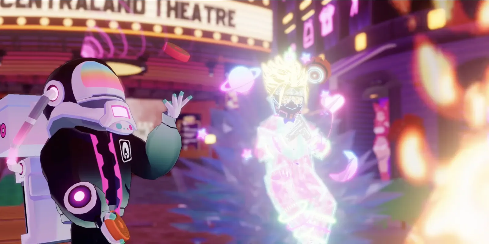
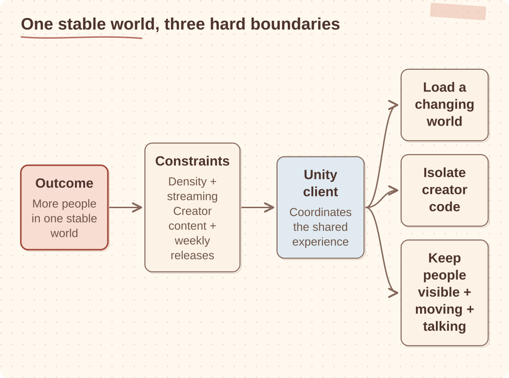
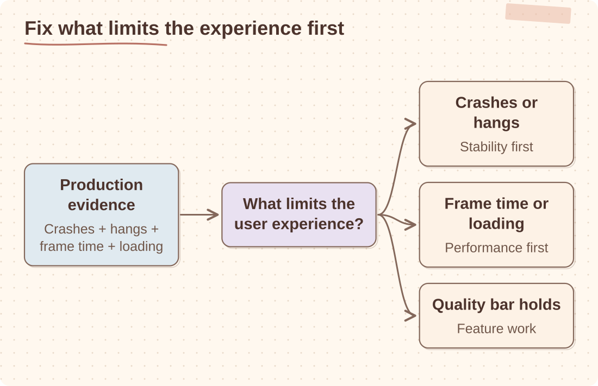
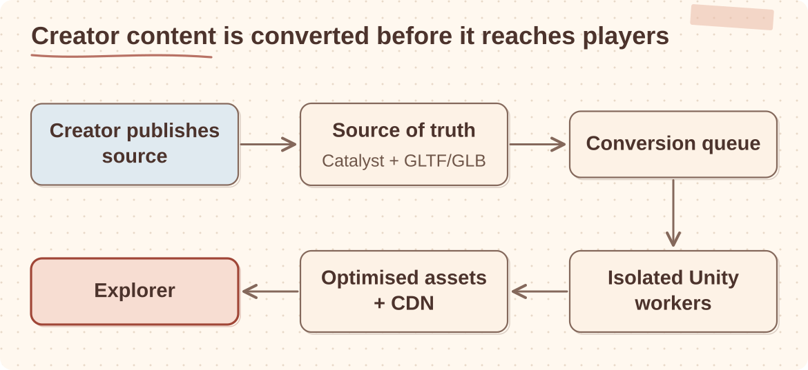

Case study
Unity Explorer
I worked on Decentraland's original web client before leading the ground-up rebuild and production release of its Unity/C# PC client, while the existing product continued to ship.
Unity / C# / Arch ECS / V8 / CRDT / LiveKit / SQS / headless Unity workers / asset bundles / Catalyst / Sentry
Context
Decentraland needed more people and avatars in the same place, long sightlines, reliable real-time presence, creator content and weekly delivery. The old web client had carried years of technical debt. It could still be patched, but every patch made something else more fragile: more special cases, weaker ownership, slower development and less confidence in releases.
We decided to rebuild after upkeep stopped being a realistic option. Unity was already part of the legacy path; the important change was the client architecture and what it allowed the product to do.

What changed
- Rebuilt the client as a modular Unity/C# application designed for streaming the world, creator content and weekly releases, with telemetry built in.
- Moved busy social spaces to Pulse, a server-authoritative multiplayer service, aiming for reliable shared state with about 100 people in one place.
- Worked directly on the asset-bundle converter that turns creator GLTF/GLB assets into optimised client content.
- Pushed performance towards a stable 60 FPS with about 100 concurrent users, cutting CPU, memory and GPU memory pressure along the way.
- Connected telemetry to prioritisation: crashes, hangs, frame time, loading and release regressions became inputs to technical direction.
- Tightened release discipline to about 75 public builds a year, including one 52-day run without a hotfix.
Architecture
The product direction determines which technical boundaries matter.

Production evidence shows which problem comes first.

Three decisions define the client. Game state lives in a data-oriented ECS because frame-time spikes are user-facing product problems. Creator scenes run in isolated V8 runtimes and communicate through CRDT, which helps reconcile scene and engine state but does not solve multiplayer authority by itself. Real-time multiplayer still needs an explicit authority boundary; peer-to-peer did not scale as more players shared the same space, so reliable voice, avatar sync and coordination moved toward server-backed infrastructure.
Creator content pipeline
The asset-bundle converter connects Decentraland's creator tools to the production client. Creators build scenes with the TypeScript SDK and publish their original GLTF/GLB assets to Catalyst. Catalyst stays the content-addressed source of truth.
Creator source stays intact while a replaceable pipeline optimises delivery.

The dependency graph matters because changes cross several ownership boundaries: SDK contracts shape creator output, Catalyst owns canonical content and manifests, the converter produces platform-specific derivatives, and Explorer consumes both the source metadata and optimised bundles.
The result is faster loading without touching the creator's GLTF/GLB source. If the optimisation strategy changes, we regenerate bundles from Catalyst instead of asking creators to republish their scenes.
Decisions that mattered
- Isolate creator scenes. Each scene runs in its own V8 engine with an error budget. A scene that throws too many errors a minute is suspended and the client keeps running. With user-generated content, hostile input is the normal case.
- Bound the work, not the world. No allocation in hot paths, aggressive pooling, LOD and avatars prioritised by relevance. The world is open-ended; the frame budget is not.
- Ship verticals while the old client keeps serving users. We split the rebuild into shippable slices and kept release quality visible. The legacy client stayed live until the new one earned its place.
- Let telemetry order the backlog. Technical debt was tied to loading time, frame rate and crash rate, so priorities came from data rather than from whoever argued hardest.
- Separate content ingestion from conversion. Creator uploads queue in SQS while headless Unity workers turn GLTF/GLB assets into client-ready bundles, so conversion capacity scales on its own.
- Use servers where presence must be dependable. CRDTs helped reconcile state but did not answer who owns the truth. Peer-to-peer became fragile as more players shared a space, so we kept the protocol open and used server-backed multiplayer where reliability required it.
Lessons learned
- The rebuild became real when the new client could ship every week, not when the architecture looked complete.
- For a social product, unreliable presence is a product failure.